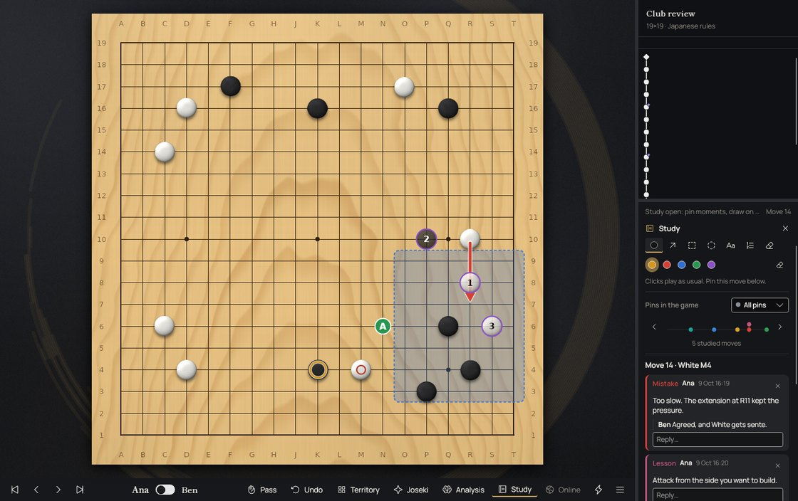
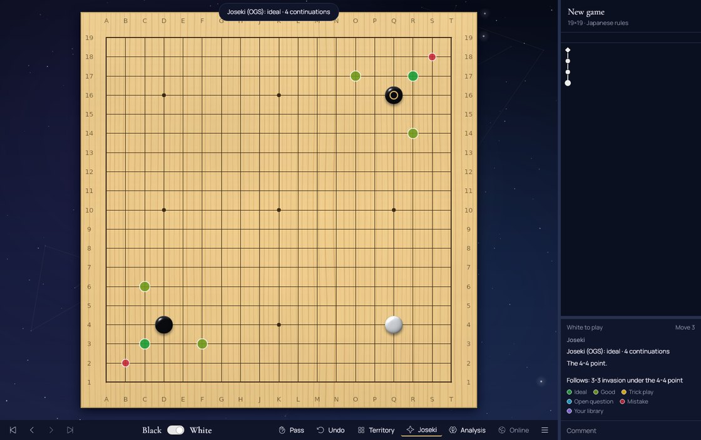
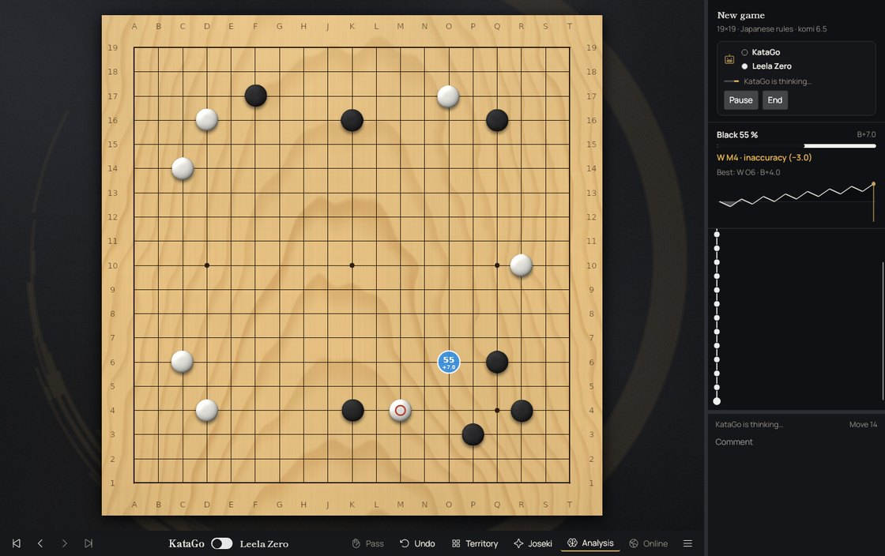

Features
Everything you need at the board.
Play friends on one screen, take on KataGo or any GTP engine, review your games, or take on the world on OGS.

- ◎
Live AI analysis
KataGo runs in the background from the moment Hoshi opens and rates every move: best, excellent, good, inaccuracy, mistake or blunder, with points lost.
- ▦
Territory at a glance
See secure and potential territory and the estimated score, from Hoshi's own estimator or KataGo's ownership map.
- ▤
Your game libraryNew
Every game you play is kept. Open one later and step through it: KataGo judges each move again, with all its effects and music.
- ❖
SGF editor
Open and save SGF files, explore variations in a game tree, add comments, marks and setup stones.

- ⚑
Pin what matteredNew
Press S during any game and pin moments as a mistake, good move, question, key moment, joseki, life and death or lesson. A timeline shows them along the game.
- ↗
Draw your thinkingNew
Arrows, areas, circles, letters and numbered "what if" lines, without touching the game. During your OGS games it is notes only: no engine, and drawing never sends a move.
- ⇆
Share and discussNew
Save the study as an SGF and send it to a friend or a teacher. Their notes and replies merge into yours; other programs still read it as comments.
- ?
What would you play?New
A quiz built from your pins, and a printable game report with every moment, the notes and KataGo's verdict. See a sample report
- →

- ◈
Joseki on the boardNew
Turn on Joseki and every corner shows the known continuations, coloured by how the OGS Joseki Explorer rates them, with its comments in the sidebar.
- ❀
Joseki trainerNew
Practise lines on the main board in random corners. Spaced repetition brings back the ones you miss; fetch new lines from OGS or import your own SGF.
- →

- ⌁
Online on OGS
Sign in to online-go.com, accept challenges and play in real time with clock and chat. Hoshi only creates unranked games.
- ●
Face to face
Two players, one screen, on 19×19, 13×13 or 9×9, with pass and undo — every move still judged by KataGo.
- ⇄
Yours, offline
Free and open source. No account needed to play locally; your OGS login uses OAuth and Hoshi never stores your password.
- 文
English and SpanishNew
The whole app switches language live from Preferences. English by default.

- ⚙
Play against any engineNew
Hoshi's own KataGo is ready out of the box; add Leela Zero, GNU Go, Pachi or any GTP engine with its command line. Choose colours, board, handicap, komi and rules with Ctrl+G.
- ⇋
Engine vs engineNew
Let two engines play each other and watch the game grow in the tree. Pause, go back to any move and try your own idea: the engine answers from there.
- ⌨
GTP consoleNew
See every command and answer between Hoshi and its engines, read their logs and type GTP commands yourself.
- ◎
Analysis with your engineNew
Any engine with lz-analyze or kata-analyze can drive the analysis panel instead of the built-in KataGo. All engines stay off during your OGS games.

- ✦
Moves you can feel
The move that wins a fight shakes the board, cracks the wood and throws embers; routine opening moves just click. Captured stones shatter and weak groups glow faintly. Too much? Turn it down to subtle or off at any time with F.
- ♪
Adaptive music
A calm lo-fi loop that adds drums, arpeggios and an overdrive layer as strong moves at key moments stack up. It stays calm through the opening and cools down when you slip.
- ☾
Themes, boards and stonesNew
Five themes — Night sky, Ink and gold, Zen garden, Warm minimal and a Classic tribute — plus six gobans, five stone sets and ten backgrounds to mix with any of them.